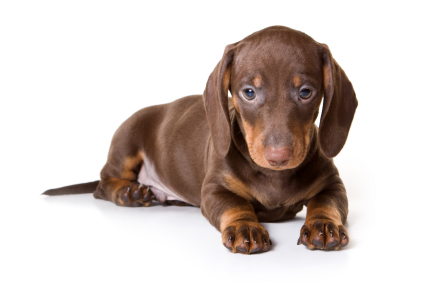

DachshundBG


Грижа за кучето
Дакелчетата са доста здрави. Основният риск е свързан с особеностите на структурата на тяхното тяло. Животното има дълъг гръб и в същото време къси крака - това застрашава да премества междузвездните дискове. Ето защо е важно да се следи теглото на кучето (не трябва да надвишава стандарта) и неговата дейност. По-специално не я окуражавайте да скача високо или нагоре и надолу по канапето. Спазвайте стриктно диетата и дозировката на храната. Диетата на почти ¾ от парчето трябва да се състои от месо, което е толкова любимо на всички ловуващи кучета. Видовете такси, изброени по - горе, сасобствениците на вълна, с различни характеристики. Всеки от тях обаче се нуждае от периодична грижа за него. Ползата от това специално усилие не се изисква. Гладкокосите дакели трябва да се почистват ежедневно в продължение на няколко минути с грубо ръкавице и след това с мека кърпа. Дългокосите и къси коси са изпечени със специална твърда четка и гребен.

Физическа активност
Всички видове дакел, с снимки и именакоито вече се срещнахте по-горе, се нуждаят от физическо натоварване. Ежедневните разходки са отличен предотвратяване на наддаване на тегло, което се случва с тази порода кучета, които се съдържат като домашни любимци (не ловни), доста често. Специалистите препоръчват разходки с такси кратко, но често, което им дава много прегазен. Заслужава да предупреди тези, които имат своята област страна или къща. Dachshunds заради естествената си ловни големи фенове poryt земята.